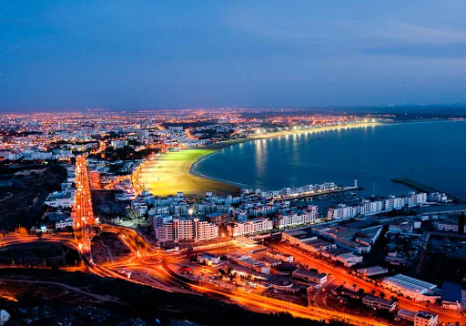
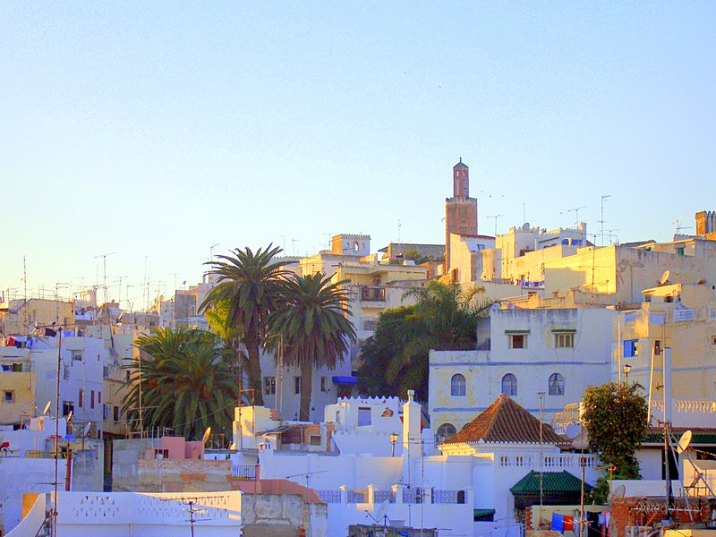

Agadir
Agadir est une ville balnéaire située au sud-ouest du Maroc sur la côte Atlantique, à 500 km au sud de Casablanca, 235 km à l’ouest de Marrakech et à 173 km d’Essaouira. Contemporaine, assez rectiligne comme certaines villes des E.U, elle en a également la propreté, le luxe, les promenades. Sa baie fait partie des lus belles baies du monde. Elle est dotée de 10 km de plage.
Visitez-moi
Marrakech

Avec ses innombrables marchés, jardins, palais et mosquées, vous en aurez plein la vue. Marrakech, appelée aussi la ville rouge est la quatrième plus grande ville du Royaume après Casablanca, Fès et Tanger avec 928 850 habitants en 2014, elle demeure la capitale touristique du pays. Plus qu’une cité, Marrakech est une perle polie par l’histoire et le goût de l’accueil, sachant accueillir ses invités à bras ouverts depuis des siècles.
Visitez-moi
Essaouira

La ville d'Essaouira dispose d'un fort potentiel touristique, grâce notamment à ses atouts naturels, historiques et culturels, devenant ainsi une grande destination touristique. Sa médina, inscrite au patrimoine mondial de l'UNESCO, l'îlot de Mogador, son port, datant du XVIIIe siècle et ses plages, permettant la pratique des sports nautiques, font de la province une destination touristique de qualité.
Visitez-moi
Tanger
Tanger a longtemps été une importante place stratégique. Avec ses deux mille cinq cents ans d’existence, elle compte une population de 974 000 habitants aujourd’hui, c’est l’une des plus anciennes villes d’Afrique du Nord. Sa médina, sa kasbah, ses bazars et ses souks comptent parmi les plus animés du pays, et ses plages sont superbes d’environ 7 km devenant ainsi une grande destination touristique.